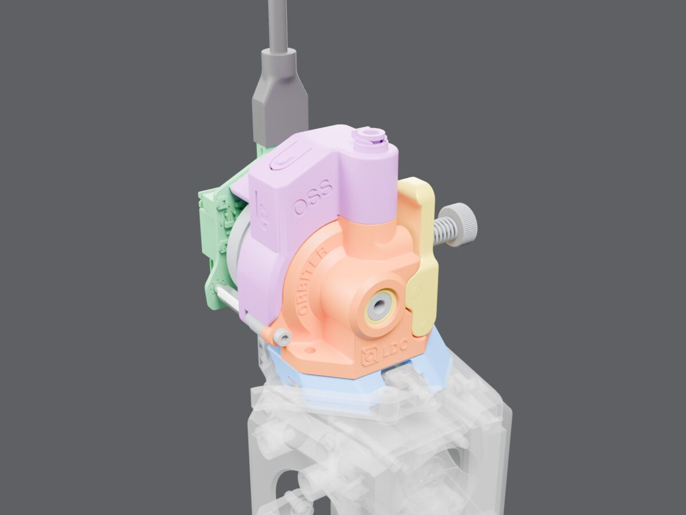
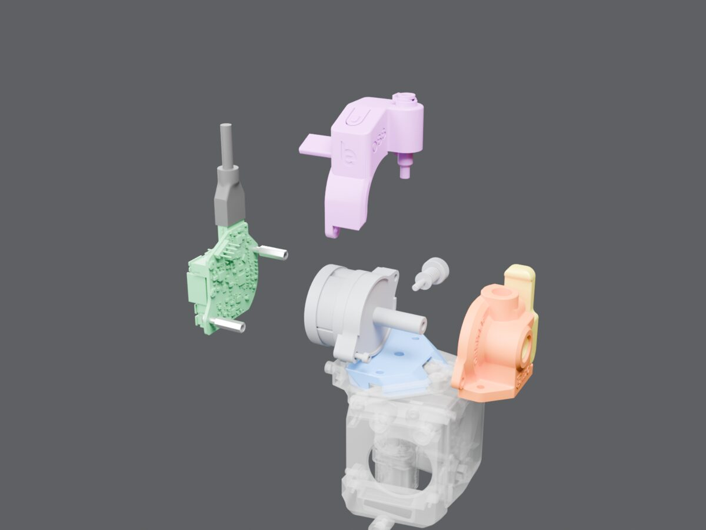
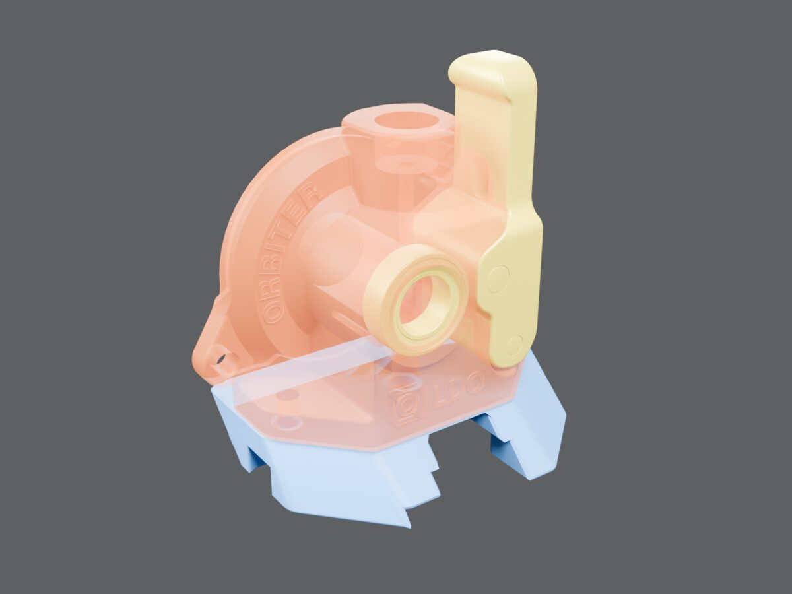

The Orbiter hub housing
In the model the part is named HubHousing V5 With Logo. It is the orange body with the ORBITER and LDO lettering: the front half of the Orbiter 2.5 extruder. Its flat base screws onto the blue Crossbow adapter. The filament inlet and latch are on its front, and the grey motor and gear housing bolt onto its back.

Assembled, as in lite-30
Seen from the front left, above the nozzle. The Smart Sensor caps the top and takes the bowden tube. The O2S board sits behind the motor, with the USB cable stub going up.

Pulled apart, front to back
Same parts. The hub housing is moved 45 mm forward, the board 45 mm back, and the sensor 55 mm up; the motor and gear housing stay where they are. The blue adapter is under both the housing and the motor.

The housing alone, see-through
The yellow parts sit in and on the housing: the latch lever, its shaft, and the MR148ZZ bearings. The base plate shows how the housing lands on the adapter.
Why it came up
- The 2 mm correction. In lite-29, the grey motor and gear housing sat 2.000 mm higher than the vendor's STEP puts it relative to the orange housing, so the parts ran into each other. The orange housing sits flush on the adapter, so it stayed put and the grey stack moved down 2 mm.
- The corner clash. When one head is at the front corner beside the other head's dock, this orange housing and its latch run into the parked head's green O2S board (up to 168 mm³). Tracked in vt350#121.
Checked against LDO's own model
LDO's Orbiter v2.0 mockup.step (the 2.5 body is unchanged) was fitted to the hub housing group alone. Then I measured where the motor landed. In lite-29 it sat 2.82 mm too high and the gear housing 1.94 mm too high. In lite-30 the motor is within 0.04 mm of LDO's position, and the gear housing, spur gear and spider shaft within 0.03 mm. The motor sits where LDO puts it.
Rendered from vt350-lite-30.FCStd, opened read-only (file unchanged), with Blender Cycles. Board and sensor CAD: Orbiter-Toolboards @ 52a5a33 (CC0-1.0). The Orbiter geometry is Orbiter Projects / LDO design (the Orbiter site and LDO's Orbiter v2.0 mockup are CC BY-NC-SA 4.0), so these renders are shared non-commercially, with attribution. Written 2026-11-10 for vt350#6.